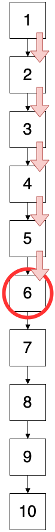
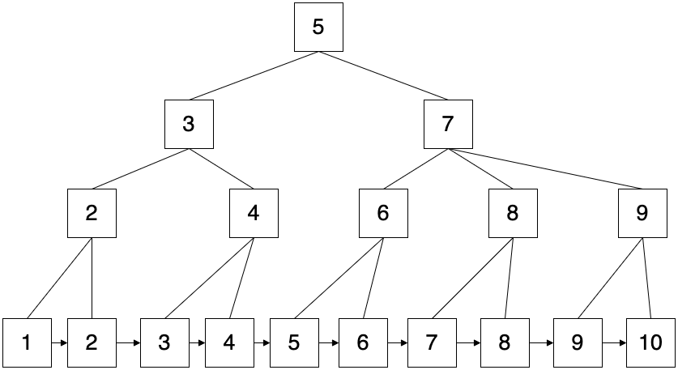

【MySQL】インデックスを少し理解した
ひがき
@higaki_program
誰かの役に立てばと思いまとめてみる
自己紹介
経歴
2020 年 3 月 大学院卒業(愛媛)
2020 年 4 月〜 総合電機メーカーの設計(兵庫)
2022 年 4 月〜 自社開発企業の開発(福岡)
開発
業務: Laravel + Vue.js
個人開発: Flutter + Firebase 触ってみたり
趣味
サッカー、バスケ、たまに筋トレ
対象
- インデックス？？
- 実はよくわかってないんだよね
- 過去・未来の自分
今回扱う範囲
- MySQL
-
B+Tree
- R-Tree
- bitMap
- hash
- invertedLists
-
- PostgreSQL
- SQLServer
インデックス とは
データベースにおけるインデックスとは、目的のレコードを効率よく取得するための「索引」のことです。
インデックスとは？仕組みをわかりやすく解説
こんなイメージ
インデックスなし

例）6 をインデックスなしで検索する
インデックスあり
例）6 をインデックスありで検索する
確かにインデックスを使うと効率良さそう
٩( ‘ω’ )و
前提条件
MySQL のデフォルト設定の場合
(innoDB)
インデックスの種類
- クラスタインデックス
- セカンダリインデックス
クラスタインデックス
最下層には全カラムの情報がある
MySQL のデフォルト設定では必ず作成される
作成の優先順位
- PRIMARY KEY
- NOT NULL の UNIQUE インデックス
- innoDB が自動で作成(表示されない)
具体例
User テーブル
クラスタインデックス
最下層に ID, NAME, EMAIL の全ての情報がある
セカンダリインデックス
最下層に
- 指定した KEY
- PRIMARY KEY の情報
を持つインデックス
生成
- UNIQUE のカラム(MySQL が自動生成)
- 外部キー制約(MySQL が自動生成)
- ユーザーが指定したキーで作成する
CREATE INDEX index_user_name ON user(name);
外部キー制約によるインデックス
MySQL では自動で作られる
PostgresSQL では作られない
具体例
User テーブル
NAME にインデックスを貼った場合
CREATE INDEX index_user_name ON user(name);
ちなみに、インデックスは複数貼ることもできる
CREATE INDEX index_user_name ON user(name, email);
なるほど!!
どのようにインデックスって使われているんや？
(о´∀`о)
インデックスでの検索
User テーブル
メールアドレスが sato@example.com の人物の情報を探せ
SELECT * FROM users WHERE email = 'sato@example.com';
この場合、どのように検索されるか？
以下のどれか。
- クラスタインデックスでの検索
- NAME のセカンダリインデックスでの検索
- テーブルをフルスキャン(インデックスなしで検索)
クラスタインデックスで検索できるか？
ID での検索はできるが
メールアドレスで検索は無理そう
NAME のセカンダリインデックスで検索できるか？
NAME での検索はできるが
メールアドレスでの検索は無理そう
テーブルをフルスキャン(インデックスなしで検索)
メールアドレスで検索できそう！
これで検索
ユーザー ID が 6 の人物の情報を探せ
SELECT * FROM users WHERE id = 6;
id が PRIMARY KEY だから
クラスタインデックス使えそう！！
必要な情報を GET！
tanaka の人数を数えよ
SELECT count(name) FROM users WHERE name = 'tanaka';
name だから
NAME のセカンダリインデックスが使えそう
必要な情報を GET！
MOMOTA のメールアドレスを探せ
SELECT name, email FROM users WHERE name = 'momota';
メールアドレスの情報がない！！
クラスタインデックスには全カラムの情報があるはず
MOMOTA のメールアドレスを探せ
ID: 8 を使ってクラスタインデックスで検索
メールアドレスの情報を GET！
なるほど、インデックスってこんな感じで使うんや
ちょっと待って Σ੧(❛□❛ )
メールアドレスが sato@example.com の人物の情報を探せ以外
「テーブルをフルスキャン」でもよくないか？
確かに( ・∇・)
誰がインデックスを使うって決めてんの？
オプティマイザー
統計情報を元にデータへのアクセス方法を決定します
テーブルをフルスキャンになる条件
- テーブルがきわめて小さい場合(今回は説明のため小さい)
- 参照できるキーがない
- 取得するレコード数が多い
- キーの値があまり分散されていない(カーディナリティーが低い)
ちなみに
クラスタインデックスを使用しない場合
- SQLServer でクラスタインデックス未作成時
- PostgreSQL (おそらく)
など
PostgreSQL、Oracle、DB2 がどうなっているかご教授いただけますと嬉しいです(´∇ ｀)
インデックスの構造
実データへの参照先がわかるようになっている